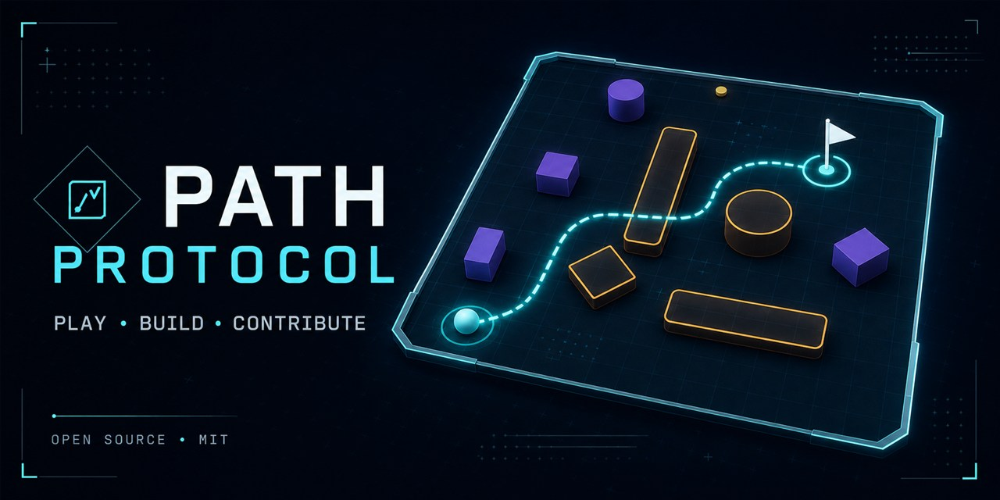
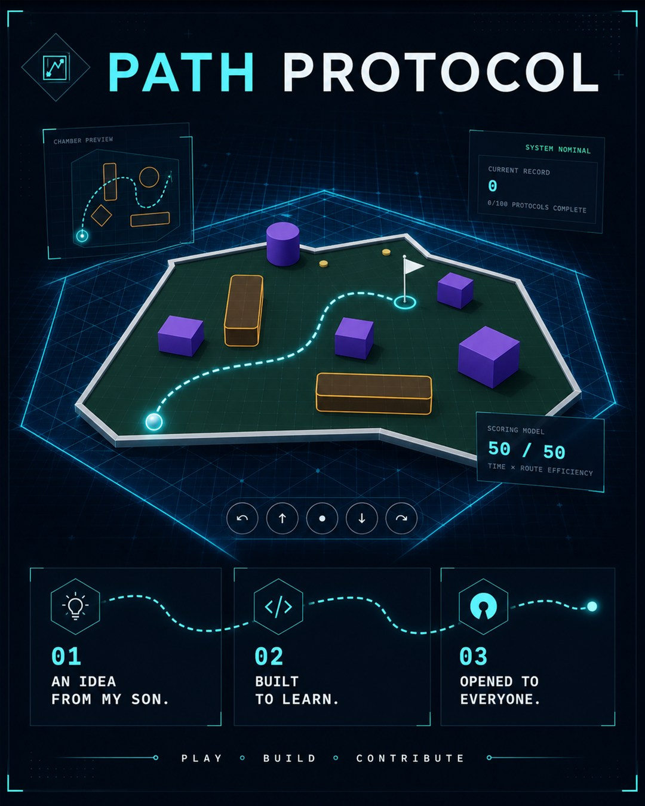
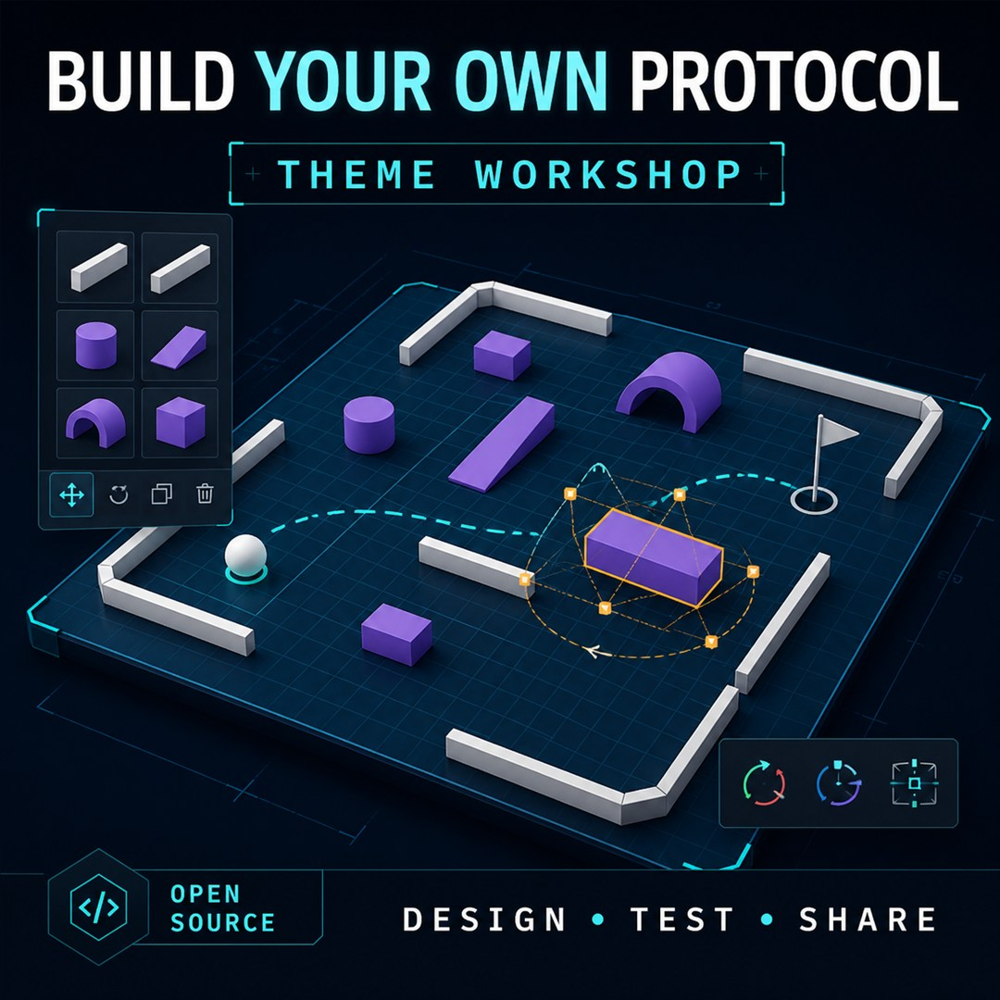

Play
Guide the token through 100 increasingly demanding precision chambers. Find a shorter route, avoid hazards, and improve your score.
Start a level →Open-source precision systems online
Path Protocol is a 100-level browser precision game inspired by mini golf—and an authoring system for creating themes and courses.
No installation. Modern desktop browser recommended.

01 / THE STORY
The original concept came from my son. I had always wanted to build a mini-golf game, so I used the idea as a way to learn how a web-based game could work—and how AI-assisted development could help turn an experiment into a real, tested application.
I built Path Protocol on and off over a month, then opened the project so other people could play with it, inspect it, question it, and take the experiment in directions I have not considered.
Eric Silver Connect on LinkedIn ↗

02 / CHOOSE YOUR PATH
Start wherever your curiosity leads. Every path helps the project improve.
Guide the token through 100 increasingly demanding precision chambers. Find a shorter route, avoid hazards, and improve your score.
Start a level →Use the Theme Workshop to experiment with themes and courses, arrange walls and obstacles, validate your design, and playtest it.
Open the workshop →Read the code, report a reproducible bug, improve documentation, suggest an idea, or submit a focused pull request.
Contribution guide →
Theme Workshop
The game includes its own authoring workflow. Create a private theme, build levels in the 1600 × 900 logical world, validate each change, and publish when it is ready for other players.
Explore Theme Workshop issues →03 / UNDER THE COURSE
Clear ownership boundaries keep presentation, simulation, authoring, and persistence understandable enough to experiment with.
Navigation, menus, accessibility, settings, HUD, and authoring screens.
Deterministic movement, collision, hazards, scoring, and progression.
One WebGL arena with perspective camera, GLB models, trails, and effects.
Same-origin theme APIs, schema validation, persistent themes, and moderation.
The route is open
Path Protocol is available under the MIT License. Thoughtful feedback, experiments, and focused contributions are welcome.